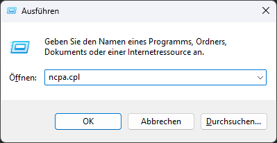
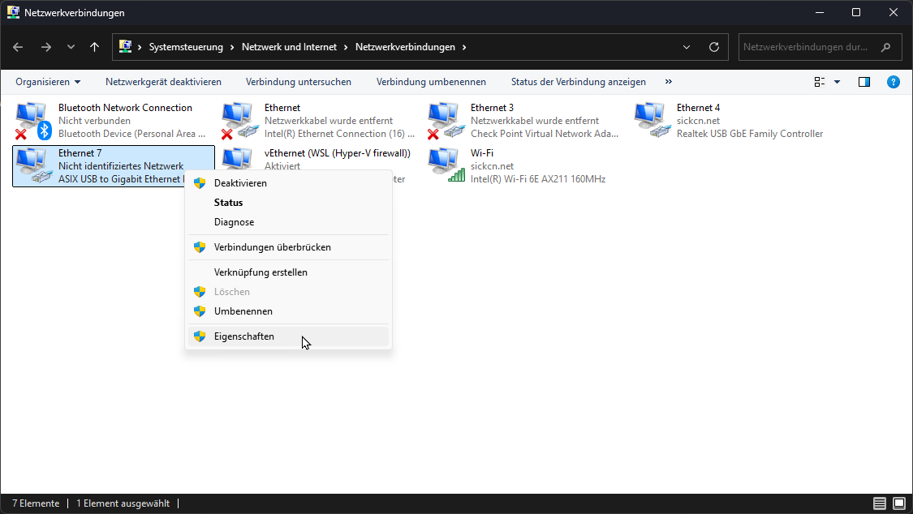
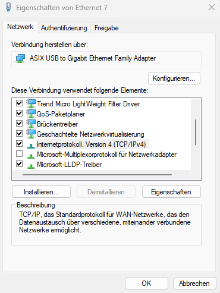
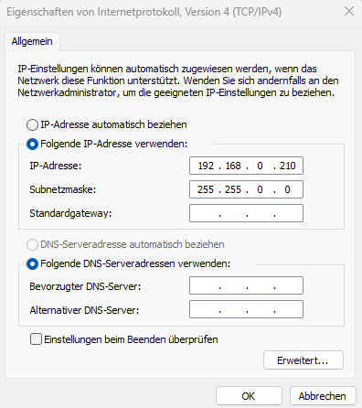

Getting Started with the LiDAR Starter Kit
Follow these steps to set up and start using your LiDAR Starter Kit:
Step 1: Hardware Setup
- Connect the LiDAR sensor to your computer using the provided cable and the network adapter.
- Ensure the power supply is connected and turned on.
- Configure the IP address of the adapter.
Detailed instructions
- Shortcut in Windows: "Win + R": "ncpa.cpl"

-
Alternative: Open your operating system's network settings (e.g., Control Panel > Network & Internet in Windows 10/11, or the equivalent in your OS).
Choose Advanced network settings -
Identify the USB Ethernet adapter (might be listed as ASIX USB to Gigabit Ethernet Family Adapter).

-
Click on the adapter and select Properties / Edit.
-
Enter administrator credentials if necessary.
-
Locate Internet Protocol Version 4 (TCP/IPv4) and select Properties or right-click.

- Change from DHCP to manual IP settings:
Use the following IP address:192.168.0.xxx
Subnet mask:255.255.0.0

- Save changes by clicking Ok in both windows.
- Open a browser and enter the default IP address 192.168.0.1. You should now see the Sensor UI

Figure 1: Connection setup for the LiDAR Starter Kit.
Step 2: Software Installation
- Install the required drivers and software from the SICK website.
- Download the example Python scripts provided in the kit.
Step 3: First Measurement
- Run the
01_read_devicetype.pyscript to verify the connection. - Use the
02_read_measurement.pyscript to take a single measurement.
Refer to the advanced section for more complex use cases.